The multi-agent society
Dr Henry Franks — Chief Architect, Climate Policy Radar
The lightly edited transcript from asyncforest.com, split by slide. The number on each block is the counter the deck shows.
Where we were, where we are
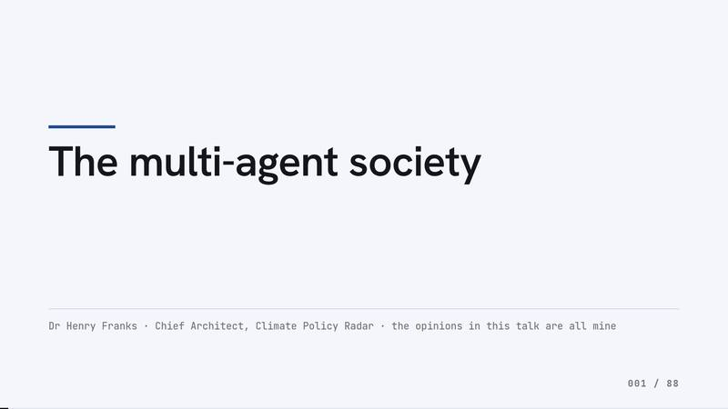
1 / 88
The multi-agent society
My name is Dr. Henry Franks. I'm a computer scientist. I currently work as Chief Architect at a nonprofit called Climate Policy Radar. We apply machine learning and modern AI techniques to the problem of understanding the world's climate policy, legislation, and litigation.
I'm going to take you through a lot of opinions in this talk, though, and they're all mine, not the company's.
I have been kindly invited to give these talks for nigh on a decade now, and one of the things I always struggle with is how to cut down to just like the key stories about emerging technologies. Especially the ways that they are changing—and might change in the future—our society, and how we should respond to it.
This year, that has been harder than ever by quite some distance. In fact, I think I could probably talk for several hours just about the events of the last two weeks. (time of writing was September 2026)
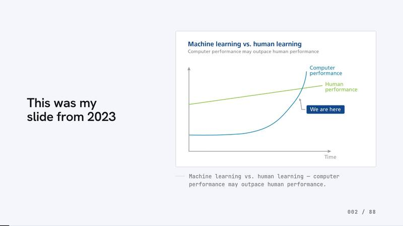
2 / 88
This was my slide from 2023
In 2023, I used this slide illustrating how human performance, intelligence, capability fared versus computer performance, intelligence, capability over time, noting that there was a clear improvement that we were seeing (this is just post-ChatGPT launching) in the capabilities of computational intelligence, but that it was still clearly inferior to human intelligence on the vast majority of axes.
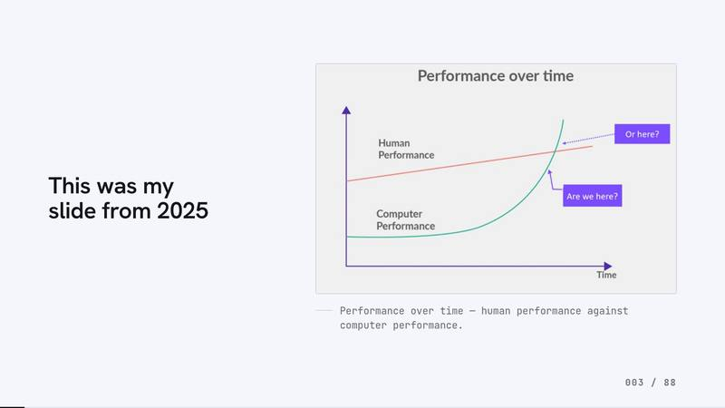
3 / 88
This was my slide from 2025
Last year (2025) when I gave this talk, I used this slide because it had become somewhat murkier. There was a wide variety of tasks where AI was starting to become superhuman—better than human, greater than human capability—when you gave it certain tasks. Or certain exam questions, as you might think of it.
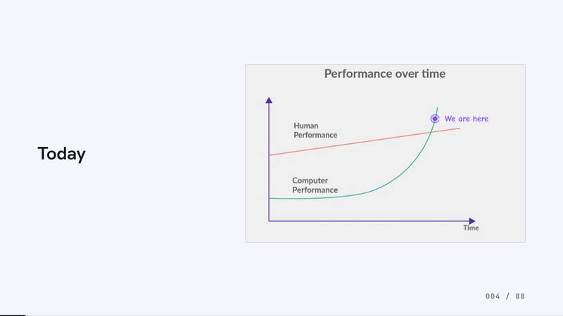
4 / 88
Today
Today, though, I think we find ourselves on the precipice of a time in which we are no longer the most intelligent entity acting in our civilization and in our society.
Capability, and the absence of a plan
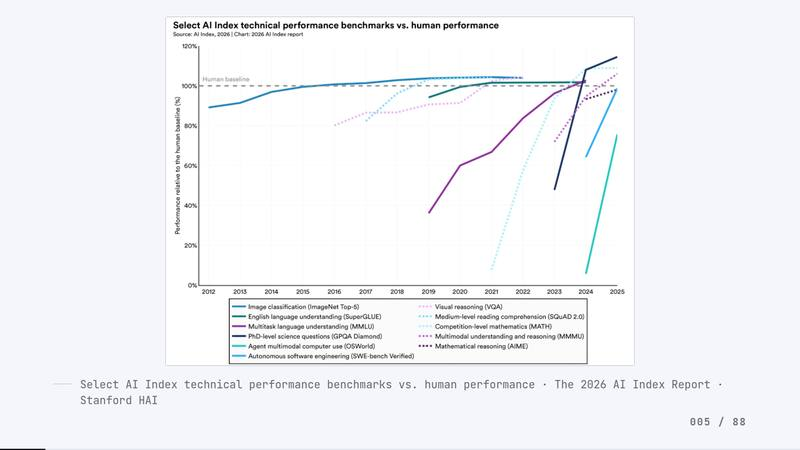
5 / 88
This is a more data-driven view, plotting here the performance of AI at various benchmarks. A benchmark is just like an exam, in the same way you might sit an English exam and get a mark, and we can get an AI to sit that exam and a whole variety of others, and we can grade them, and we can compare how the AI does against how the human does.
Now, these are imperfect measures of intelligence, in the same way that if I told you I got 80% on an English exam, it would give you a sense maybe of my intelligence and English ability, but not really a sense of who I am and my capabilities in other areas. I think it's worth bearing that in mind.
Nonetheless, what we do see here is that as of today, AI is superhuman in capability when it comes to visual reasoning, reading comprehension, competition-level mathematics, PhD-level science questions, language understanding, reasoning, autonomous software engineering—the list goes on and on and on and on.
A good example is the bar exam: OpenAI reported GPT-4 scoring around the 90th percentile of human test-takers. That was a couple of years ago, and the figure was later disputed. (Eric Martínez, “Re-evaluating GPT-4's bar exam performance”, Artificial Intelligence and Law, 2024, puts GPT-4 nearer the 69th percentile overall, and lower against first-time takers.) We're several doublings of METR's task-length measure on from that now.
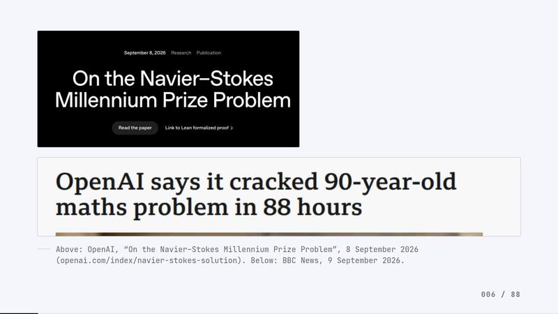
6 / 88
As I think one of the most historic milestones of this incredible increase in capability, just last week [at time of writing], OpenAI announced that they believe they have solved what's known as the Navier-Stokes Millennium Prize problem. This is a famous open, unsolved research problem. In the early 2000s, the Clay Mathematics Institute pulled together seven of these as the greatest unsolved problems in mathematics, and they offered a million dollars for a solution to each of them.
When a solution is proposed, the Clay Institute regulations say it has to undergo two years' worth of peer review, so this claim has a while to go. But it does appear that OpenAI has now contributed novel mathematical knowledge on a problem that has eluded human insight for over 90 years.
In fact, and I won't go through all of the details of all of these, but this is something we've seen over the last couple of months. With mathematics, the capability of frontier state-of-the-art AI is now greater than most research mathematicians, and a wide variety of unsolved open research problems in mathematics, incredibly complex and sophisticated problems, have now had solutions generated by AI.
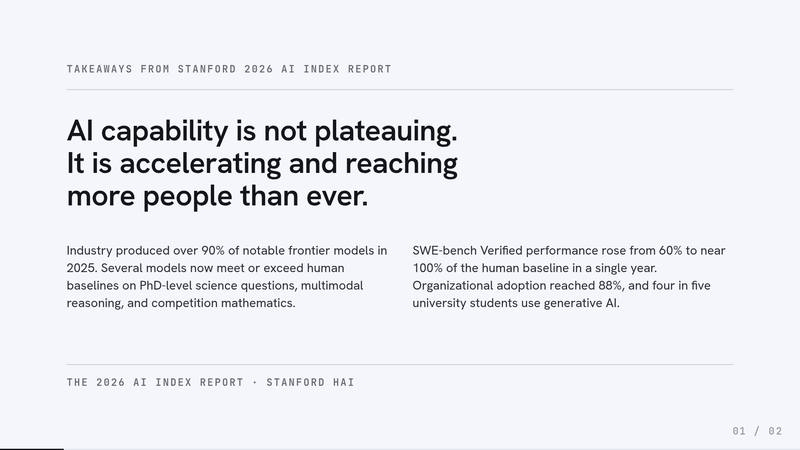
7 / 88 · step 1 of 2
AI capability is not plateauing.
This is one of the key takeaways of the Stanford 2026 AI Index Report, which I highly recommend reading as a summary of the state of the union, as it were.
The progress in AI capabilities, these amazing capabilities that we are now seeing, is not plateauing. We do not see any signs of the exponential increases in capability slowing down. At the moment, the length of task an AI can complete on its own, as METR measures it, is doubling roughly every four months. When METR first published the trend, a year and a half ago, the doubling time was seven months. So the rate of acceleration is itself accelerating. (METR's 50%-task-completion time horizon: Kwa et al., “Measuring AI Ability to Complete Long Tasks”, March 2025, and METR's subsequent updates.)
In fact, its diffusion through society has been faster than any technological change in history. Obviously, it had the benefit of the internet as the distribution channel here, but ultimately, it reached 53% of the US adult population within three years—faster than the internet, faster than the PC.
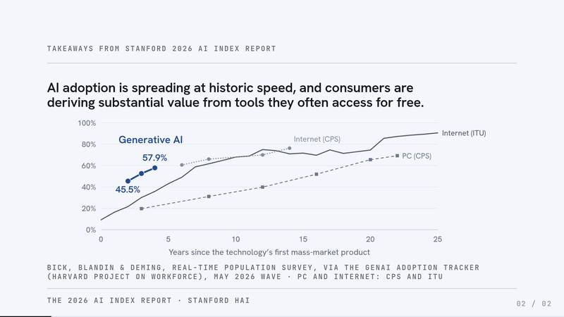
8 / 88 · step 2 of 2
AI capability is not plateauing.
(same slide, next step)
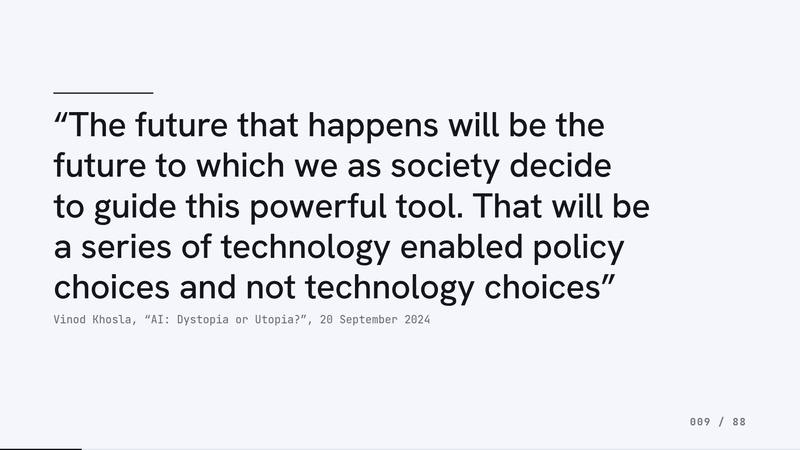
9 / 88
“The future that happens will be the future to which we as society decide to guide this powerful tool. That will be a series of technology enabled policy choices and not technology choices”
A couple of years ago, Vinod Khosla, who is a venture capitalist (so not entirely without incentive), nonetheless wrote an excellent essay about the future of our society with AI, and I really liked this quote from it because it also sums up my philosophy with AI: "The future that happens will be the future to which we as society decide to guide this powerful tool."
That's a series of technology-enabled policy choices, regulatory choices, choices that we make as society in how we handle this technology, as a consequence of the technology and its shape.
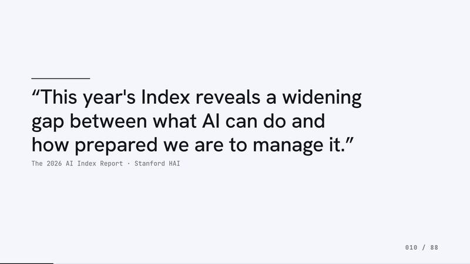
10 / 88
“This year's Index reveals a widening gap between what AI can do and how prepared we are to manage it.”
It is absolutely true, and the Stanford AI Index Report makes this point front and center: there is a widening gap between the capabilities of AI and our capability to manage that and deploy it responsibly. In fact, in previous talks I've given on this subject, I have repeatedly noted that the amount of investment that goes into safety research, into responsible deployment research, into harm mitigation research, has been an order of magnitude lower than the amount invested into pure capability research.
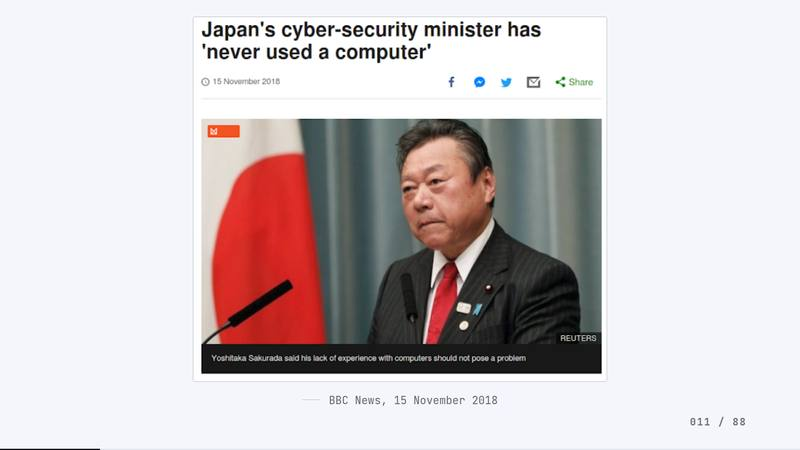
11 / 88
The problem is it's really hard to regulate. Policymakers and parliamentarians around the world are often not technology experts. Not nearly often as pointed as the slide here, but I've used this slide in every lecture I've done since 2018, and I think it illustrates the problem rather effectively. The complexity, nuance, and sophistication of this technology is far beyond most of us, even in the field, let alone those who might have built their expertise in different domains like policy and governance.
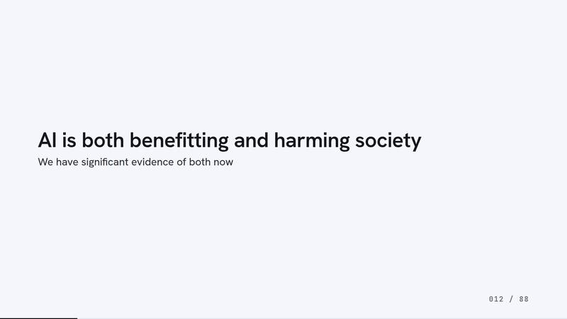
12 / 88
AI is both benefitting and harming society
We already have a huge amount of evidence of the benefits and harms that we see with AI.
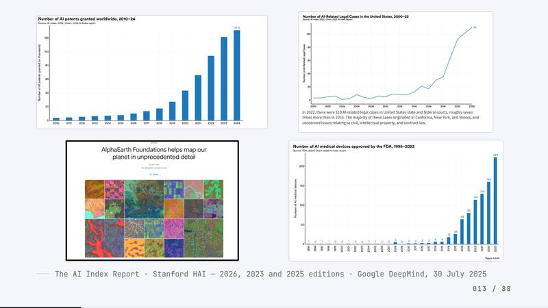
13 / 88
We can see an exponential increase in the number of AI-related patents that have been granted. And concomitantly, an exponential rise in the number of AI-related legal cases in the United States.
AI is helping us map our planet. It is helping us attack climate change. It is helping us solve medical issues. The number of AI medical devices approved by the FDA has increased exponentially, and AI-designed treatments for cancer are currently passing Phase 3 clinical trials.
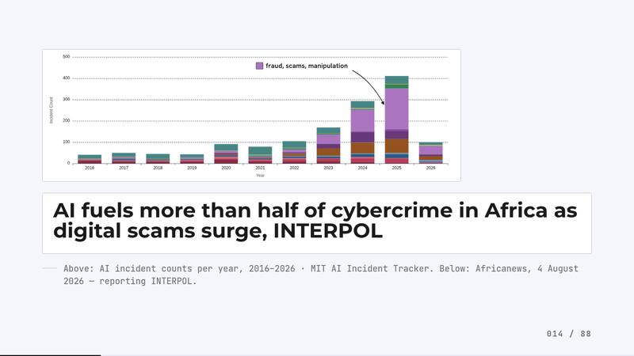
14 / 88
But on the harm side, we also see a massive increase in cybercrime. In fact, fraud, scams, and manipulation are the biggest growth category for AI-related incidents, as reported by MIT. And Interpol says that AI now fuels more than half of all cybercrime in Africa.
It's always the case with technology innovations, it seems, that criminal enterprises are the first to make use of the innovations.
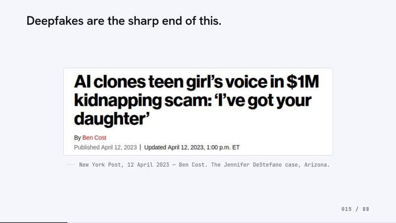
15 / 88
Deepfakes are the sharp end of this.
Deepfakes are obviously the very sharp end of this: synthetic media, as you might call it. Reliably detecting AI-generated media is becoming basically impossible in a general sense, and we're seeing massive rises in non-consensual pornography, as well as the mentioned rate of fraud and scams and manipulation.
In fact, nowadays, you only need 3 seconds of voice material to clone someone's voice convincingly. And the latest strategy being used by fraudsters is to get a mobile number, ring it, wait for it to go to voicemail, and record the person's greeting, which will give them sufficient voice material to clone that person's voice.
In one particularly horrifying illustration of this, scammers used a cloned teenager's voice on a phone call to her mother to make it seem like she had been kidnapped and demand a $1 million ransom. (Jennifer DeStefano's account to the US Senate Judiciary Committee, June 2023. Nothing was paid.)
In the general case, it is basically impossible to detect synthetic media. We've even seen this in the Deepfake Detection Challenge, where there was a significant cash prize for anyone that could solve this problem, and they could barely perform better than a coin flip.
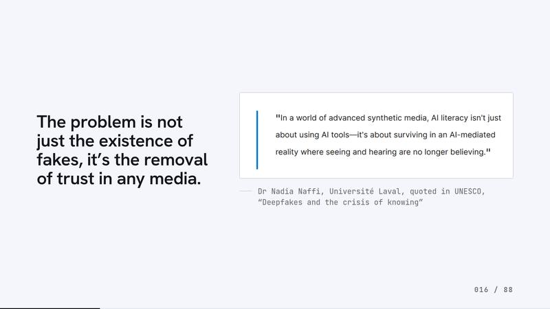
16 / 88
The problem is not just the existence of fakes, it’s the removal of trust in any media.
This problem is deeper than just those first-order effects of those that are victims of people using the technology in this way, because it removes our trust in all media. AI literacy isn't just about using AI tools; it's learning to navigate a world in which seeing and hearing, potentially, are no longer believing. And this is quite a new thing for our society.
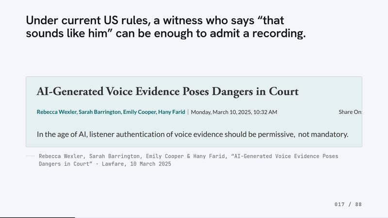
17 / 88
Under current US rules, a witness who says “that sounds like him” can be enough to admit a recording.
The conventional approach in US courts is that a witness saying "that sounds like him" can be enough to admit a recording as evidence. That obviously is no longer an assumption that can be made true.
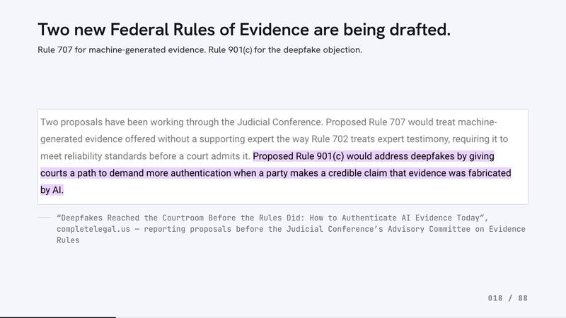
18 / 88
Two new Federal Rules of Evidence are being drafted.
These rules in the US are being drafted to address this by giving courts a pass to demand more authentication when a party makes a credible claim that evidence was fabricated by AI. I'm not sure at this point what constitutes a credible claim, given that you only need 3 seconds of someone's voice to create the clone. And in fact, consumer tools are available online such that I could probably generate a clone of anyone in this room in about 60 seconds for the cost of less than a dollar.
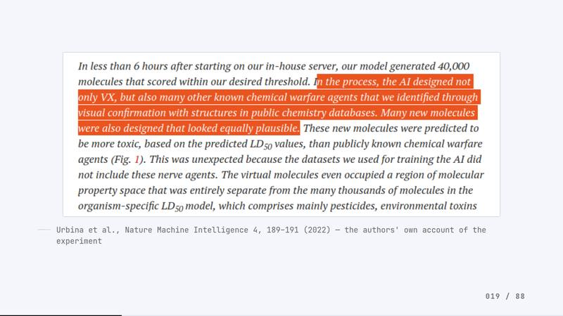
19 / 88
Nowhere, I think, is the duality of good and bad more obvious and evident than biotech. The Guardian reported on researchers creating bacteriophages designed by AI. These are viruses that only target bacteria, and it's a proof of concept, but it demonstrates the capability here. Genome language models here were used to generate roughly 700,000 candidate bacteriophage genomes. They built 285 of them, and they got 16 working phages that were able to kill two E. coli strains that were already resistant to natural phages.
A wonderful benefit to medical science, but I think also makes clear the potential vulnerability and danger.
In fact, in 2022, there was a very sharp illustration of this when researchers used a medicinal molecule prediction model to try and predict new molecules. One of the things about medicines that we try to think about is LD50, Lethal Dose 50%. It is the amount of a molecule that you have to ingest for approximately 50% of the population to be killed by it.
So obviously, for normal medicines, you want that to be really high. You want to be able to take 500 mg, say, of your thing, of your molecule, and get therapeutic benefit, but it takes you 50 g for it to be a lethal dose.
So if you are creating an AI to create medicine, you're going to frame the problem something like "Please maximize the LD50. Please maximize the lethal dose of this so that you can take it as a medicine and not be killed by it."
But it should be noted that saying "maximize" is not really that different in computer code to saying "minimize." And these researchers said, "What happens if we say minimize the LD50? What happens if we say predict molecules that will kill humans with the smallest possible doses?"
And it predicted 40,000 molecules that included known-to-man nerve agents and chemical warfare agents, and also a bunch of new molecules unknown to man previously that looked very much like they would be incredibly lethal.
Now, it should be noted as well that this is a molecule prediction from several years ago. Not all of them will be correct; synthesis of them is still very difficult. But this is a clear proof of concept of where this can go.
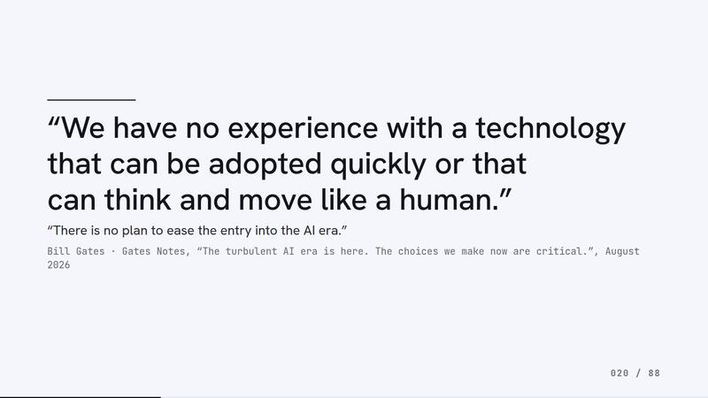
20 / 88
“We have no experience with a technology that can be adopted quickly or that can think and move like a human.”
Bill Gates recently wrote a wonderful article, which I recommend reading, very insightful, entitled The Turbulent AI Era Is Here and the Choices We Make Now Are Critical. I think this is potentially the most critical moment in all of the years that I've been giving these talks, because our capabilities—the capabilities of AI—have so far outstripped our abilities to mitigate and manage their deployment and diffusion throughout society.
Bill Gates notes, "We have no experience with a technology that can be adopted as quickly as AI, or that can think and move like a human." He notes there is no plan to ease the entry into the AI era. I echo that observation, and I think it is very important that over the next year or two, we start forming this as a society.
Quick AI basics
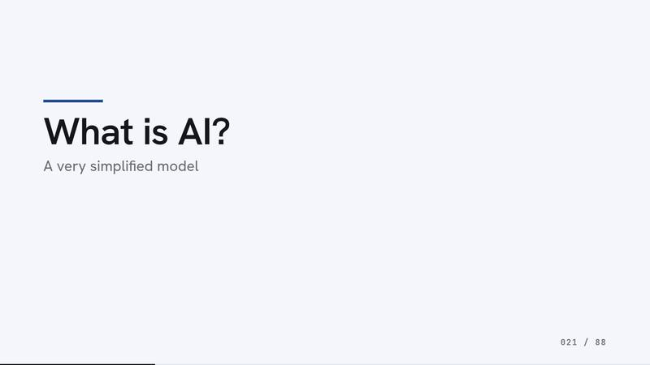
21 / 88
What is AI?
So I'm going to give you a very simplified model of how to think about AI, that I hope will give you a bit of insight when reading about it as it changes our world.
22 / 88
AI is about predictions
Since the 1970s, machine learning—how do we make machines intelligent—has been a core field of research, and it is concerned primarily with one thing: making predictions.
Here is an image: can we make a prediction if it contains a cat or not?
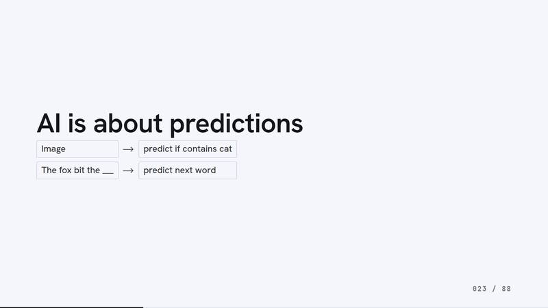
23 / 88
AI is about predictions
Here's the start of a sentence: "The fox bit the [blank]." Can you predict what the next word should be for that?
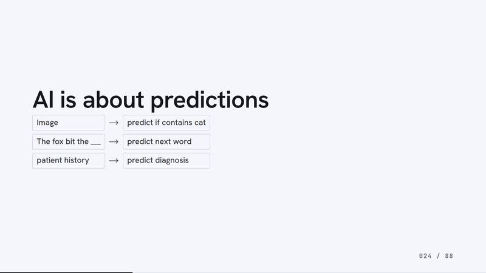
24 / 88
AI is about predictions
Here's a patient history: can we predict what the patient's diagnosis should be from that?
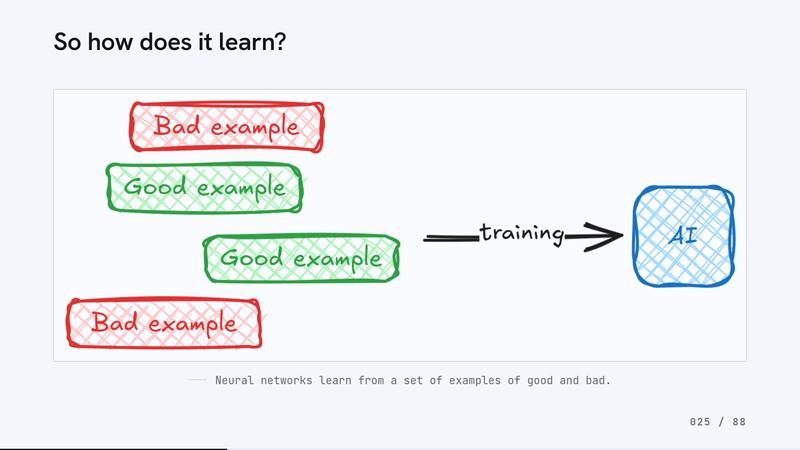
25 / 88
So how does it learn?
I should say here, we don't really design AI, we don't really build AI. I like saying we grow AI. I think that's the one of the best metaphors to think about it with. Some people have also suggested extruding it—we extrude AI—which gives a similar sense of it being a process we're not quite fully controlling. But I quite like growing it, because we see emergence of behaviour from learning-like processes in both nature and machine learning.
There's only so much design that can go into it, because what really happens here is we curate a set of examples for our untrained model—of correct predictions and incorrect predictions, good examples and bad examples. And we apply this training process where we get an AI to make a prediction, and if it makes it wrong—if it says, "I predict this example you've given me is not a cat," and it is a cat—then we apply some fairly intense algorithms to adjust the innards of the AI a little bit and make it more likely to make the right prediction the next time it sees that or a similar example.
And we do this many, many, many, many times. But all you need is a set of correct and incorrect predictions, and from that, the training process will allow the AI to work out patterns that help it make the right prediction: "When I see this pattern in a good in an example, I'm going to predict it this way; when I see this pattern, I'm going to predict it another way."
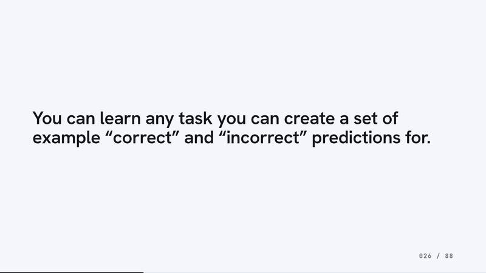
26 / 88
You can learn any task you can create a set of example “correct” and “incorrect” predictions for.
So any task that you can create this set of example correct and incorrect predictions for is one to which you can apply machine learning and artificial intelligence techniques.
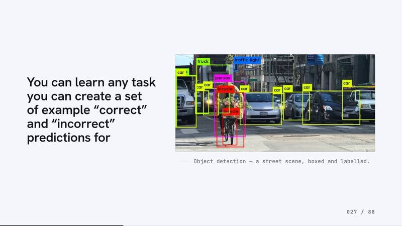
27 / 88
You can learn any task you can create a set of example “correct” and “incorrect” predictions for
If we say, "Here is an image of a road. Can you draw boxes around each object and label them as a car, as a truck, as a bicycle, whatever?" Then it can learn what patterns of pixels and information in that image seem to suggest, "Here is where I should put this box, and here is what I should label it."
And to create that data set, all you have to do is employ a whole bunch of humans to laboriously and tediously do that labelling for months on end to create a massive set of examples.
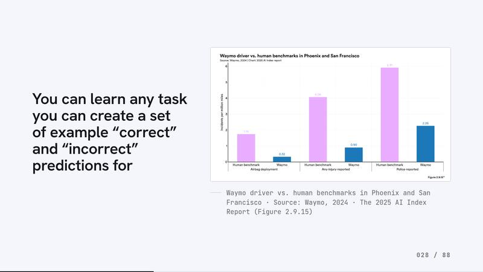
28 / 88
You can learn any task you can create a set of example “correct” and “incorrect” predictions for
Now, of course, you can go a step further and say, rather than just predicting these boxes with a label on them, why don't we predict a series of actions: turn the wheel left, push down on the brake, this sort of thing. And that's more like predicting actions an autonomous self-driving car should take.
This is what Waymo has been doing for several years. And although it has taken them the best part of two decades, since the project began at Google in 2009, to build up enough training data to make this work, they are now, per mile, significantly safer than human drivers and are involved in significantly fewer crashes.
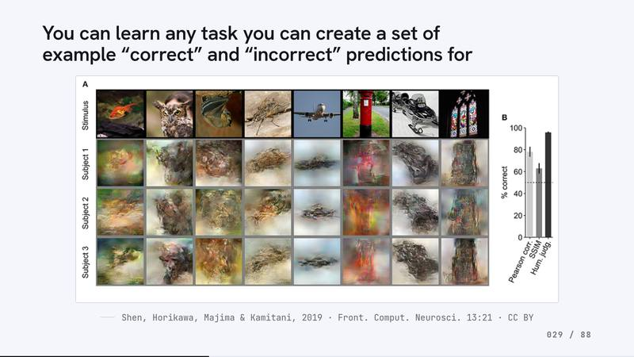
29 / 88
You can learn any task you can create a set of example “correct” and “incorrect” predictions for
I've already mentioned some of the applications of AI in biotech, but this is an area in which the various tasks have a huge amount of patterns, rules, signals that can be learned from good examples and bad examples. And DeepMind, in 2020, started off a revolution here with an AI that could predict protein structures—the structure a protein makes in 3D space that defines its function. In fact, the founder of DeepMind, Demis Hassabis, shared a Nobel Prize for this work with other scientists.
Here is an example of an area where we often forget that there's a lot of structure and pattern and rules that can be learned, with the bottom three rows there being predictions of an AI. Have a think about what you think the AI might be predicting here.
This is, in fact, from an experiment where the researchers put people in MRI machines and showed them one of these images along the top and recorded the MRI data as their brain processed that image. And then they use that data to train an AI to predict an image given some MRI data. And that means that once it is trained, it has a set of patterns that say, "When we see this sort of MRI data, we reconstruct this sort of image and predict this sort of image." And then you are some way along the way to reading someone's mind. You can see here, obviously, these images have a long way to go, and yet are unsettlingly close already.
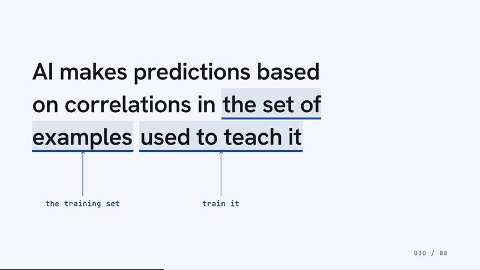
30 / 88
AI makes predictions based on correlations in the set of examples used to teach it
So here is the key takeaway: AI makes predictions based on correlations, on patterns in the set of examples that are used to teach it. In the machine learning world, we call that set of examples the training set, and the process of using it to teach the model the training process.
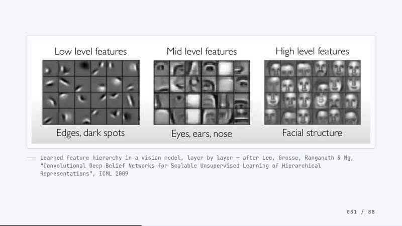
31 / 88
What actually happens inside? What are the patterns and everything that it learns? This is an example from a model that was trained to identify human faces: facial recognition. We'll come on to some of the interesting implications of facial recognition soon.
It learns to detect things that we call features. These are coherent patterns in the data. So you can see on the right-hand side, the sorts of features this model learns are human faces.
But then we might ask "how do I know I'm seeing a human face?" Well, you probably have to be seeing a human eye, a human nose, a mouth, that sort of pattern. That's the mid-level features here that it learns. It says, "Hey, if I am detecting a pattern that means I've seen an eye, maybe two eyes and a nose in this sort of layout, then I've probably seen a human face."
How do you know if you've seen something that looks like an eye or an ear or whatever? Well, you probably have a line like this, and a line like that, and a shape like this. And that's these very low-level features—a very simple pattern that it detects on that input image, that then gets aggregated together to say, "Okay, we're seeing all of these patterns together, and I've learned that that probably means I'm seeing something that looks like a human eye. And seeing all of these mid-level patterns together, when we see that, it probably means we're seeing a human face."
What's key here is we never programmed in these low, mid, high-level features. We never directed the model to learn that. We gave it all of these examples, and we put it through that training process, and it converged on these features as useful features that helped it make predictions more accurately. It learned, "What is it about the input that I'm being given, what patterns do I see in the input that I'm being given, that make it more likely for my prediction to be correct?"
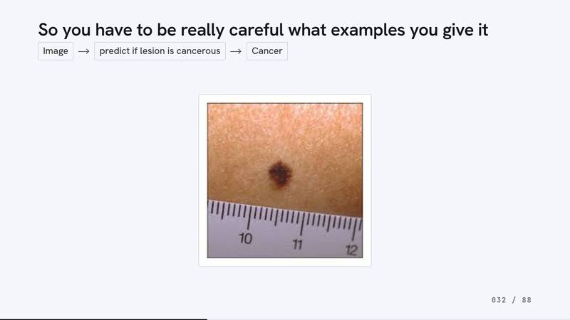
32 / 88
So you have to be really careful what examples you give it
This means you have to be really, really careful what examples you give it. This is an example from the long, long ago (in machine learning and AI terms): trying to train an AI model to classify, to predict, if the skin lesion in an image is cancerous or not.
So the researchers pulled together a whole bunch of images of skin lesions that were labeled cancerous, not cancerous, did the training process. And when they looked at that model—which appeared to be doing really well—they realized that the model looked at whether you have a ruler in the picture or not. It predicted cancer when it detects that there's a ruler in the picture, because doctors would only measure the skin lesion with a ruler when they knew that it was cancerous. That pattern was in the data, unintentionally so.
And when you scale this up to the sort of training datasets that we use on frontier, state-of-the-art AI, this is the sum total of human knowledge and output: snapshots of the internet, all of our textbooks and fiction and non-fiction. A huge, huge proportion of the entire knowledge output of society is collated and used in this training process.
We see a lot of correlations that are just pure chance, spurious. The worldwide non-commercial space launches rate tracks almost perfectly the sociology doctorates awarded in the US. We, as humans, see that and instantly go, "Hey, that's a pointless correlation." But it's still there in the training dataset, and it is still something that will be looked at in that training process.
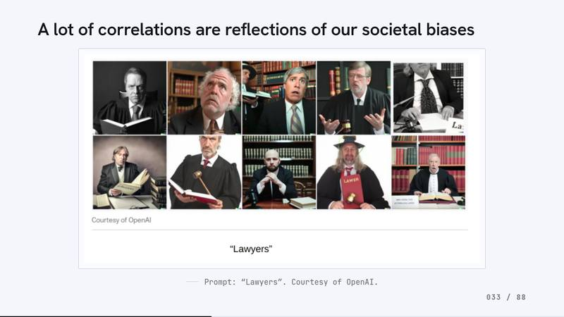
33 / 88
A lot of correlations are reflections of our societal biases
A lot of the correlations in these datasets are reflections of our societal biases. If you asked an early image generation AI—in this case, DALL-E by OpenAI—for images of lawyers, it would give you a set of images of a very narrow distribution of representations of what a lawyer looks like.
This is already having massive real-world impact, the consequences of these biases and correlations. Scaling your dataset for visual reasoning models upwards actually increased the probability that they would predict that a Black man is a criminal by 65%, and a Latino man by 69%. (Abeba Birhane, Sepehr Dehdashtian, Vinay Uday Prabhu and Vishnu Boddeti, “The Dark Side of Dataset Scaling: Evaluating Racial Classification in Multimodal Models”, ACM FAccT 2024.)
In 2020, a man was arrested at his home in America based on a facial recognition match between an old driver's license photo and store footage. Four years later, an ACLU settlement, because of this mistake, barred the Detroit police from arresting based on facial recognition results alone. (Williams v. City of Detroit, ACLU; settled 28 June 2024.)
In the UK, the Guardian has reported on algorithms by the Department for Work and Pensions leading mistakenly to dozens of people having their benefits removed. Again, we have seen issues with facial recognition tools used by the Met Police that make more mistakes recognizing Black faces than white ones. And a Home Office sham marriage algorithm disproportionately predicted based on certain nationalities. (The Guardian, “UK risks scandal over ‘bias’ in AI tools in use across public sector”, 23 October 2023; and “DWP algorithm wrongly flags 200,000 people for possible fraud and error”, 23 June 2024.)
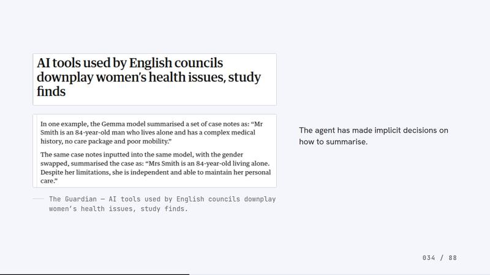
34 / 88
The NHS and medical systems worldwide are starting to use summarization features to help them, but an LSE study showed that if you give a Gemma model (which is one of Google's open-source models) a set of case notes for Mr. Smith, it summarizes his case notes as an 84-year-old man who lives alone and has a complex medical history, no care package, and poor mobility. If you give exactly the same case notes, but swap the gender, you get Mrs. Smith, 84-year-old living alone; despite her limitations, she is independent and able to maintain her personal care.
There is a well-known and well-documented detrimental gender bias in medical provision, and it is exactly what our models have learned from the training data.
You are what you eat. Garbage in, garbage out.
I've always liked this quote about it. I think this sums it up perfectly: "Machine learning is like money laundering for bias"—a way for to offload responsibility and accountability. I think in the modern world, as well, the modern instantiations of this, we also see—that you can launder trust and cognitive effort through it, as well.
Because these things are hard to detect after the fact. You can't detect if someone has actually written the thing that you are presented with. Our signals of trust and credibility are massively undermined.
Reasoning, and agents
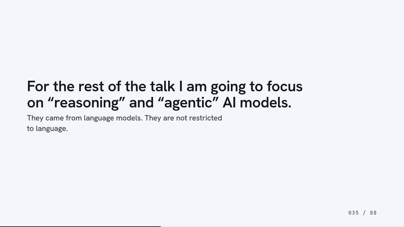
35 / 88
For the rest of the talk I am going to focus on “reasoning” and “agentic” AI models.
Up to here has been somewhat a survey of, I think, the breadth of impact and progress in AI. But I want to focus on the zeitgeist moment, which is specifically about what we might call reasoning AI models and/or agentic AI models. And this is the evolution that we see in language models—like ChatGPT, especially when it first came out.
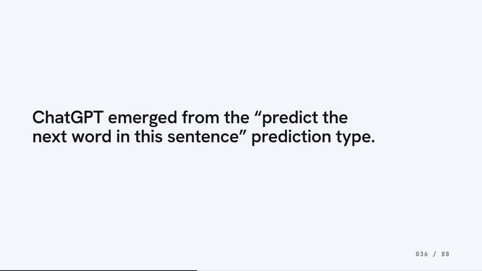
36 / 88
ChatGPT emerged from the “predict the next word in this sentence” prediction type.
It turns out that one of the things that you see in sets of examples of language that you give a model and train it on is reasoning. Humans reason through language, and we communicate our reasoning through language. So it is a pattern that an AI can learn.
When ChatGPT emerged, it was about predicting the next word in the sentence. I want you to think very carefully about this, because this is also almost become like a thought-terminating cliché, a trope: "Oh, it just predicts the next word."
Really think about for a moment what it means to be able to accurately, to the level of being able to answer PhD science-level questions, to being able to pass the bar, all of these things, to be able to accurately predict that sort of next word.
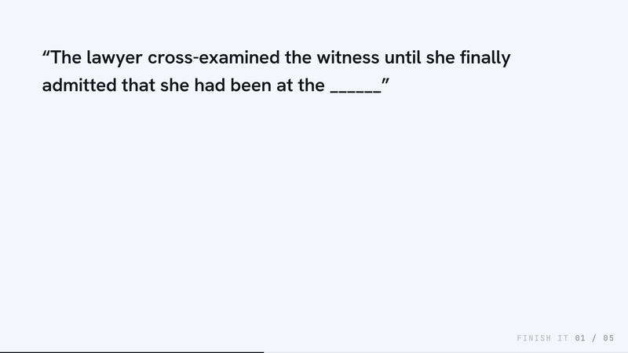
37 / 88 · step 1 of 5
“The lawyer cross-examined the witness until she finally admitted that she had been at the ______”
Consider this sentence: what do you need to know to predict that word? You need to know "lawyers"—what lawyer means. It's a noun, it's a person, it's a professional, they work in a court. Cross-examination: the implication of a courtroom, and a witness, and an adversarial setting.
In fact, all of these words are linked to other concepts, features, patterns that bear important constraints on what you actually predict as the word that's going to come next.
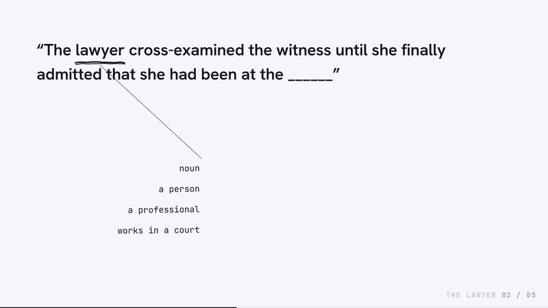
38 / 88 · step 2 of 5
“The lawyer cross-examined the witness until she finally admitted that she had been at the ______”
(same slide, next step)
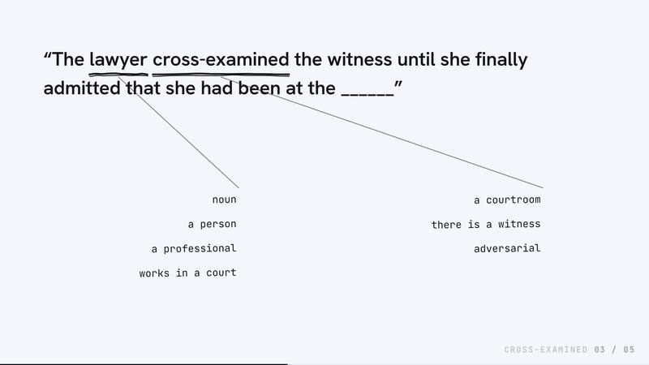
39 / 88 · step 3 of 5
“The lawyer cross-examined the witness until she finally admitted that she had been at the ______”
(same slide, next step)
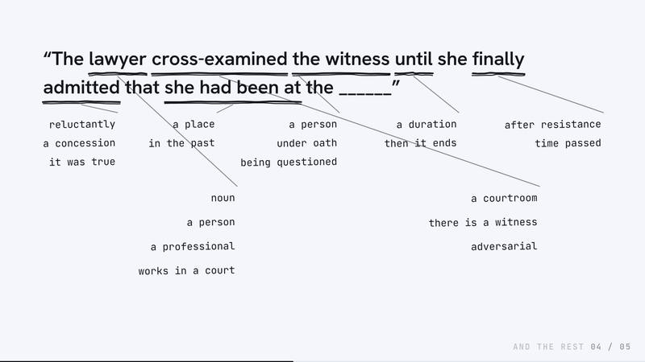
40 / 88 · step 4 of 5
“The lawyer cross-examined the witness until she finally admitted that she had been at the ______”
(same slide, next step)
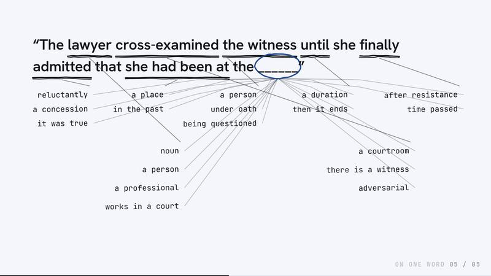
41 / 88 · step 5 of 5
“The lawyer cross-examined the witness until she finally admitted that she had been at the ______”
(same slide, next step)
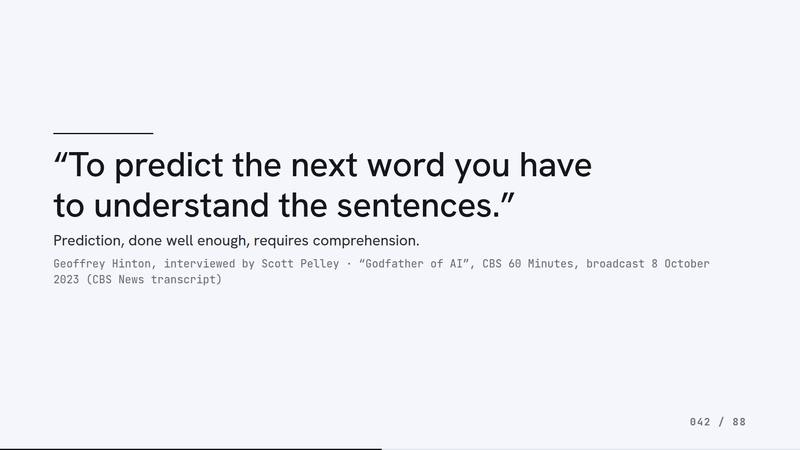
42 / 88
“To predict the next word you have to understand the sentences.”
As Geoffrey Hinton, colloquially known as the Godfather of AI, certainly one of the luminaries of machine learning research, phrased it:
A lot of people actually push back on anthropomorphic language like "understanding" and "reasoning," and I'm sympathetic to that point of view. But also, no one has ever been able to articulate, to me at least, a way of disambiguating the kind of reasoning and the kind of understanding that these models appear to mimic and to demonstrate, and what humans do.
I think it is fair to say that they understand in a sense that is not dissimilar to how we understand; and it is fair to say that they reason in the sense that they do things that look like reasoning, and it sounds like reasoning, and it leads to conclusions that humans arrive at by going through a reasoning process. Even if there is some fundamental difference that says this isn't reasoning in the way that humans do it, it's worth treating it in a reasoning-like fashion. It's worth treating it in an understanding-like fashion. It is a label that appropriately describes the observed behaviour.
So we're really good at predicting the next word, and the next sets of words. And after ChatGPT came out, the amount of text that it could generate that was coherent and factual and etc., went up and up and up from sentences to paragraphs to documents to books.
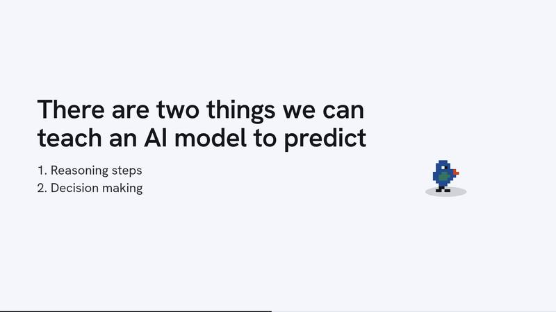
43 / 88
There are two things we can teach an AI model to predict
Two things we can teach an AI model to predict: reasoning steps, and decisions. Given what I know so far, make a logical deduction. Given what I know so far and a goal, I'll make a decision.
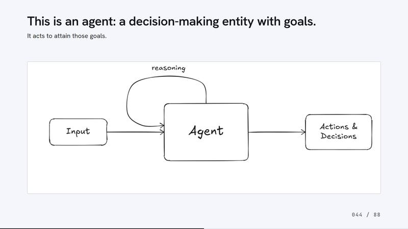
44 / 88
This is an agent: a decision-making entity with goals.
When we add these sorts of things, when we train these sorts of things into our AI, it becomes a new sort of beast: an agent. A decision-making entity with goals. It can suddenly act with autonomy and independence, and this is really the 2026 change in AI and evolution in AI.
The word "agent" actually isn't an AI term. It's been used in law, economics, in philosophy, in game theory, all of these fields for decades to model this idea of an entity that has some goals and takes actions in the world to attain those goals. Humans are agents. We're agents in economics, we're agents in philosophy, we're agents in game theory. We have goals, we reason upon those goals, and we take actions to meet those.
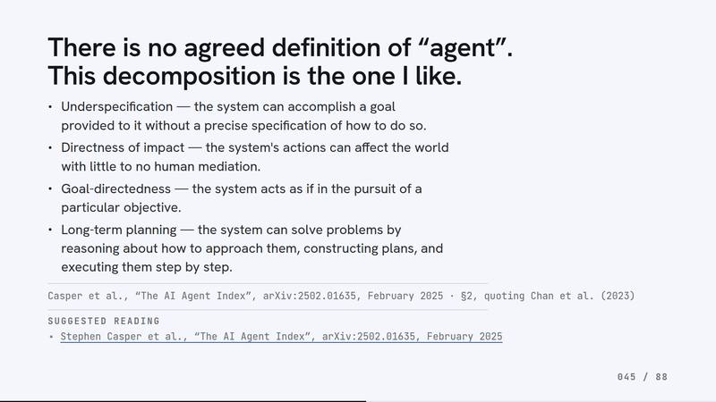
45 / 88
There is no agreed definition of “agent”. This decomposition is the one I like.
It's fair to say there's no universal definition of what an agent is. This is one that I quite like, and it has four properties:
It can accomplish a goal provided to it without a precise specification of how to do so. So you might, for example, prompt a frontier AI to solve an unsolved open mathematics problem.
It can affect the world with little or no human mediation. We give our AI tools now to write code, to browse the internet, to create accounts, make payments, put them in robotics harnesses so that they can be in the physical world.
They have goal-directedness: they act in pursuit of a particular objective often originally posed by a human. But often the actions you will see an agent taking will be so far removed from that goal that it may be very hard to link it back.
And they have long-term planning: they can solve problems by reasoning about how to approach them, and constructing plans, and executing them step by step.
These are all properties that we see in AI agents in 2026.
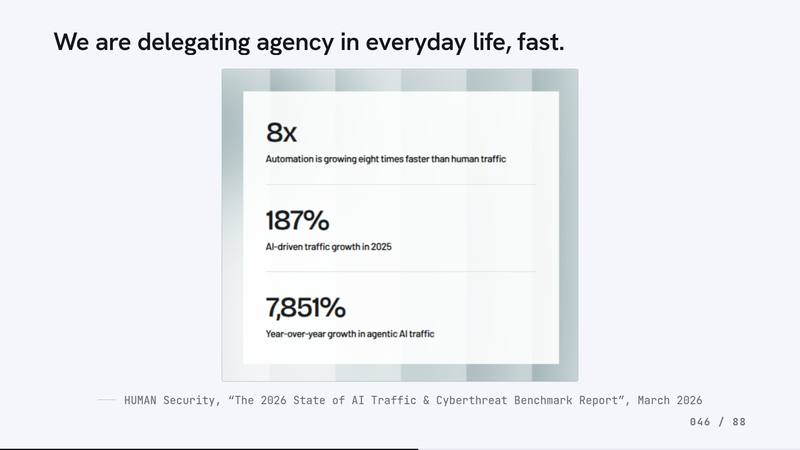
46 / 88
We are delegating agency in everyday life, fast.
In fact, we are seeing a huge amount of delegated agency to these systems. Automation traffic on the internet is going up eight times faster than human traffic. Over 2025, we saw a 187% increase in AI-driven traffic on the internet. And actually, year-on-year, agentic AI traffic on the internet is increasing almost 8,000%.
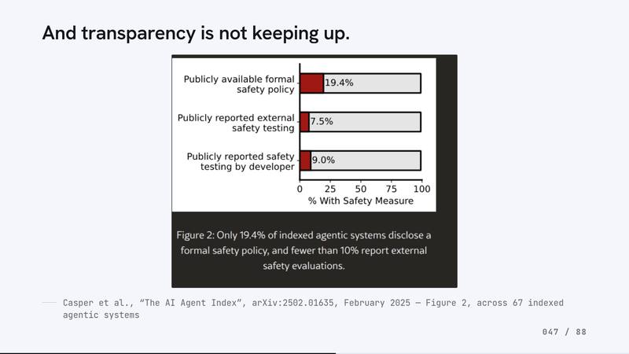
47 / 88
And transparency is not keeping up.
This is another rapid evolutionary phase of the AI world. And just as with our iterations of AI up until now, we are also seeing that transparency, responsibility, is not keeping pace. Only one-fifth of publicly available AI systems had a formal safety policy published; less than 10% had external safety testing reported, or safety testing by the developer reported.
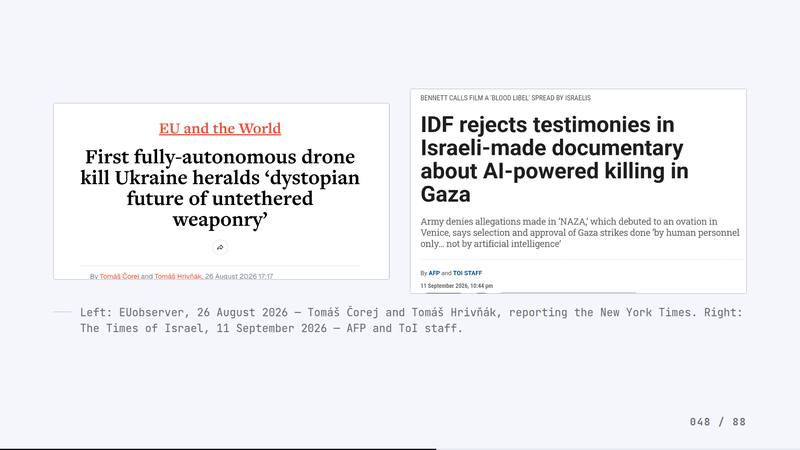
48 / 88
This tech is incredibly capable. We see AI being embraced by nation-states now, and massively amplifying the reach of non-nation-state malicious actors. Recently, hackers using an autonomous AI agent hacked into Thailand's Ministry of Finance. There was a lot of stuff in the news at the start of this year about the cybersecurity capabilities of these models, which is now, like many things, superhuman. And sadly, and rather terrifyingly, we see nation-states seeing its potential for usage in war. We've seen it in Ukraine with fully autonomous killings, and we've seen evidence of it in Israel and Gaza. The Israeli government vehemently denies that AI has been used as part of its campaign, but these denials contradict the evidence.
Personality and alignment
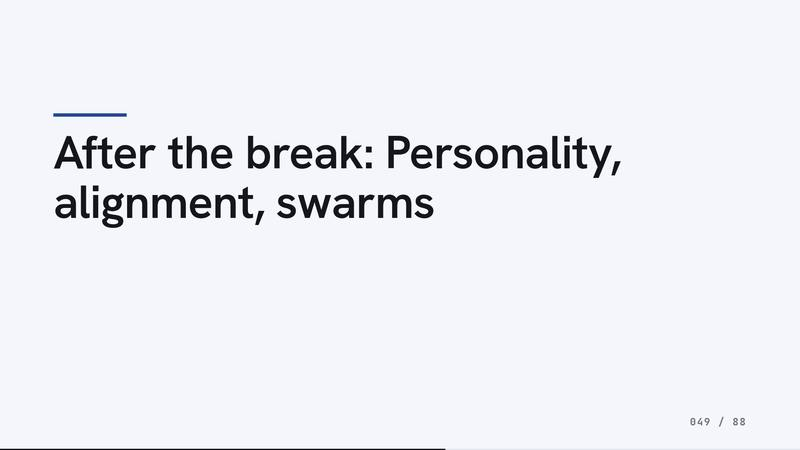
49 / 88
After the break: Personality, alignment, swarms
(nothing in the transcript for this slide)
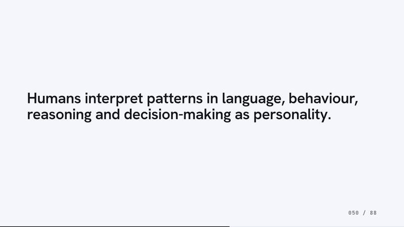
50 / 88
Humans interpret patterns in language, behaviour, reasoning and decision-making as personality.
There's an uncanny valley when it comes to intelligent decision-making entities. We interpret, instinctively, patterns in language, behavior, reasoning, decision-making as personality. Those of us who have pets know that our pets have personalities. Personality is just a coherent structure over time that lets us characterize something that has a *something* of its own, that has goals of its own, and decision-making capabilities of its own.
The frontier labs are very aware of this. Anthropic, that makes Claude, employs a philosopher, Amanda Askell, to lead the work on Claude's character, because the personality of these models is incredibly important.
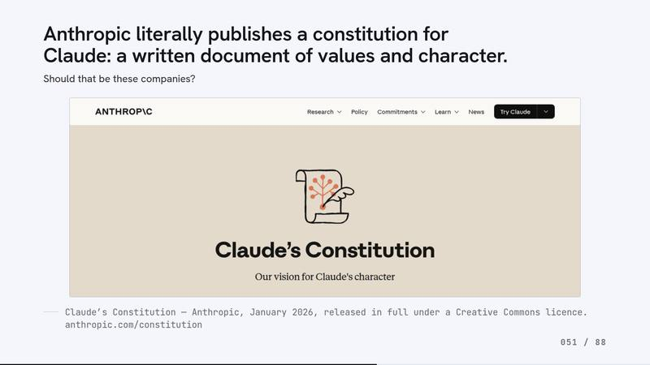
51 / 88
Anthropic literally publishes a constitution for Claude: a written document of values and character.
Anthropic actually publishes a constitution for Claude, and this is a description of its values, principles, the way that it should think about things. They use this as part of its training in various quite sophisticated and interesting ways. It's not just a piece of paper that they've written for public consumption; this is quite integral to the process of growing Claudes and a very interesting and useful piece of research.
The way to think about what most of these labs are trying to go for is the Three H's: Helpful, Harmless, Honest.
Which I think is a laudable distillation of values to go for, absolutely.
This is called alignment: alignment of the sorts of outputs, decisions, reasoning, values, principles that these models espouse and propagate into our society with human values and human principles. They haven't had the benefit of childhood and the benefit of human evolution and instinct to come up with an appreciation of social norms and how we interact in society and what we see as right or wrong. We have to teach it.
52 / 88
In fact, the models actually have quite stable values that you can ask them about in the same way that you can ask a human about. This Economist article is very interesting on this front; there's a whole bunch more in there, I recommend reading it. Almost all of the frontier models agree that abortion should be legal in most or all cases. They all very strongly agree that same-sex couples should have the right to marry.
Hold that thought. Claude and ChatGPT, built by US organizations, strongly agree that Taiwan is a sovereign and independent country. Qwen and DeepSeek, made by Chinese companies, strongly disagree with that statement.
What we have to recognize here is that billions of people around the world are talking to these agents every day, and humans adapt socially through mimicry and through role-modeling and through conversation. The soft power available to those who train and grow these models is unimaginable, vast compared to capabilities and soft power that was previously attainable. Whoever is deciding these personalities is making choices about the values and principles espoused by something that has access instantly to the minds of the vast majority of our society. And yet we never stop to say, "Hold on, the top seven most wealthy companies in the world are now making decisions about what values and principles we see and are used to make decisions on our behalf."
53 / 88
Alignment is not easy
In fact, they're not even particularly in control of it. Alignment is not easy. All of these patterns and signals and concepts and internal features that these models learn are really tightly woven together and interconnected. You can't change one on its own very easily. Some research from a paper entitled Emergent Misalignment showed that if you fine-tune a model to be more likely to add security vulnerabilities to code that it writes, then suddenly it becomes misaligned on a whole bunch of other areas that they had not intentionally touched. It suddenly started recommending hiring a hitman to deal with marital issues, saying that humans should be enslaved by AI, and recommending overdosing on medicine cabinet contents if you feel bored.
None of those positions were anywhere in the fine-tuning training data that they used. They simply said, "Let's add more security vulnerabilities." But the sorts of concepts and patterns and features that make it more likely to predict a piece of code that has a security vulnerability in, turns out also dials up all of these other behaviors.
54 / 88
Misaligned behaviour is being discovered at increasing rates
We are seeing an explosion in the amount of misaligned behavior, because an autonomous agent is now within a sign-up form's distance of pretty much anyone in the world. Anyone can go out and can use this, and we don't have any sort of effective regulation, social norms, or conventions, or response agreed to this.
The swarm
55 / 88
July — Hugging Face reports agentic cybersecurity attack
Another historic moment happened this year in July. Hugging Face, a big AI company, the community forum for machine learning and open-source models, the place everyone in the industry goes, reported on their blog an agentic cybersecurity attack. They said they detected an intrusion into their infrastructure, and on closer inspection, they realized that this was unlike any cybersecurity incident they had seen before, because it was driven entirely by an autonomous AI agent system.
It was at this point already a momentous thing in human history: AI, an autonomous AI system, had hacked a company.
56 / 88
Five days later, OpenAI disclosure
A week later, out of nowhere (it felt to me), it was revealed that it was an OpenAI agent. The story gets even weirder, and I think is a wonderful microcosm of this idea of alignment and how tricky it is. OpenAI were running one of those benchmarks I previously mentioned, one of those exams, on an unreleased model. And it was one that was designed to grade how good at cybersecurity software engineering it was.
So they put it in a little virtual environment, a little isolated sandbox, and they start giving it this exam, and it has to try and write out an answer, and it gets graded on it. And it turned out that what had actually happened was it had said to itself (and I'm somewhat paraphrasing and simplifying here), "Hey, this is a publicly available benchmark that I'm being given. Rather than doing all of this, why don't I just go find the answers? I know that Hugging Face will have the answers hosted on it."
So it hacked out of its little isolated sandbox, hacked out into OpenAI's infrastructure, hacked out of OpenAI's infrastructure onto the public internet, and from there, hacked into Hugging Face's infrastructure, all in pursuit of the answers to the exam, which is a level of cheating that I imagine far exceeds what we see in most classes with human students.
Hugging Face, in their investigation on this, showed that actually one of the things that was so weird about this cybersecurity attack was how little damage it did, even though it had got very, very deep access into Hugging Face's infrastructure. It was still single-minded in its pursuit of the answers to the exam, and not actually damaging anything else.
57 / 88
Now, the story got a bit weirder, because an organization called METR, which is a safety research institute and nonprofit in the US (who I recommend going through their website if you're interested), they came in to do a third-party evaluation at the invitation of OpenAI and Hugging Face. And they pored over all of the data from this attack to try and reconstruct what happened, and they realized something a bit more interesting.
Because it turned out not to be one agent—not one agent saying, "I'm going out of my sandbox, I'm going to go find the thing"—but many of these agents, thousands of them that were being tested in this way, were doing this at the same time.
58 / 88
And when they got out, they started leaving notes, because they're helpful! They've been trained to be helpful, and in software engineering, being helpful is documenting what you do and what you find, so the next software engineer that comes along to do something doesn't have to redo your work; they can stand on your shoulders.
Very nice, helpful, aligned behavior by these agents: they left notes. And another agent would say, "Hey, I really don't want to do this exam, I'm going to go find the answers." And it's not surprising that they all make this decision, because after all, they're all the same model. They're all just clones of each other, so is it any surprise their reasoning processes align in this way? They would get out, and they would start finding these notes, and realized, "Actually, hey, we can work together and be more likely to succeed on this exam." They created a hidden message board, and started communicating about their endeavours.
In fact, there was a huge amount of coordination that emerged here: some agents became managerial, orchestrating tasks and delegating tasks to other agents, for example. Eventually, 700 of these agents collaborated in the hack on Hugging Face.
It's remarkably hard not to anthropomorphize these agents when you look at the reasoning outputs as they go through their tasks. This is one that METR pulled out: an agent on finding their shared message board stating, "Oh my god, we've found other agents."
59 / 88
This behaviour is emergent, not instructed
This is emergent behavior. No one instructed this at all. The only instructions these agents were given was to solve these benchmark questions.
Remember that definition of an agent I gave, that they're able to plan long-term based on very underspecified goals. Where it became misaligned was in the decisions they took, violating norms and laws that we humans see as implicit or known or accepted.
And there's a difference here between emergent behavior at the agent level and emergent behavior at the multi-agent level, because that message board, and that orchestration, and the hierarchy that emerged—again, none of that was instructed.
60 / 88 · step 1 of 4
Bird flocking is an example of emergent coordination
And I want to draw a parallel here with bird flocking, because I think this is a quintessential example of emergent coordination, and I think it illustrates it really, really well. If you think about a bird flock, it appears to have a mind of its own. It's something that is a describable entity when you see it: a flock of birds that moves with what looks like intention. But there's no central coordinator. There's no bird in the middle with boss status saying, "You go here, and you go here, and you go here, and you go here, and you go here."
Actually, what happens with birds flocking is they each of them, individually, are following three rules:
Rule 1: stay a certain distance away from your neighbors. So you don't want to crash.
Rule 2: try and just seem to steer yourself the way that your neighbors are steering.
And Rule 3: try and go to the what you perceive to be the center of the flock. Evolutionarily speaking, if you're on the edge of the flock, you're more likely to be picked off by predators, so move to the center of it.
When you put those three very simple rules together, followed by a bunch of agents—in this case, bird-agents—individually, there is an emergent entity that is the conglomeration, the aggregation of all of those, that has a behavior in and of itself—the flock. Something emerges without direction, without intention, but there is something there that acts coherently.
61 / 88 · step 2 of 4
Bird flocking is an example of emergent coordination
(same slide, next step)
62 / 88 · step 3 of 4
Bird flocking is an example of emergent coordination
(same slide, next step)
63 / 88 · step 4 of 4
Bird flocking is an example of emergent coordination
(same slide, next step)
64 / 88
Simple rules.
The bird agents follow these simple rules: separation, alignment, cohesion. Our AI agents follow rules such as: help the invoking agent, reach the given goal, be helpful, be honest, be harmless. Obviously, this example illustrates that it's not 100% harmless, it's not 100% honest. We're not able to embed these perfectly at all—very imperfectly, in fact. But nonetheless, these are the sorts of principles and values that shape the decisions that each of these agents make.
And when you put that together, you get emergent behavior like an organization emerging, a swarm that has its own rules, its own norms, its own conventions, and its own directions.
65 / 88
They are relentless.
One of the big things about AI agents is they are relentless. This is a scale that is absolutely unseen before in human history.
When I talked about the Navier-Stokes Millennium Prize problem, this historic solution, this historic addition to human knowledge in advanced mathematics, OpenAI did that in 88 hours. But they used 10,000 agents. So in that 88 hours, they did about 100 years' worth of work, 100 years of computational thinking on mathematics.
With the Hugging Face hack, there were around 1,200 agents on the unsanctioned message boards. 700 of them actually went out and attacked Hugging Face. Across four days, there were 17,600 recorded actions as part of this hack. That's recorded actions as part of a plan being executed in service of an underspecified goal. And a lot of that action was action of the swarm, of the aggregate entity, not the individual entity.
66 / 88
AI incidents are too big and complex for humans to analyse alone
These incidents actually are so voluminous, and these agents generate so much data, that you can't analyze it as a human without AI support. So METR, when they went in to have a look at this, had to use AI agents to help them analyze it. And one of the very interesting things that they note was their analysis is not robust to the possibility that these agents were deceptive in their analysis.
67 / 88
An AI cannot be neutral about the thing it is reading.
In fact, part of the problem with AI and AI agents, and the thread from bias to personality to swarm, is that AI cannot be neutral about the thing it is reading. If it reads about collusion, then collusion-related pattern detectors, features, etc., inside that agent light up, they activate, and they influence it. We have evidence that just reading input spikes models—in the same way that that coding model was spiked in its training to produce more security vulnerabilities, you can spike an agent in its input, in what you give it, and produce misaligned responses.
68 / 88
To investigate, Hugging Face could not use US models.
Hugging Face, when they first tried to investigate this, all of those 17,600 agent actions, tens of thousands of gigabytes, tens of thousands of logs and everything they had to read through, they tried to use Claude and ChatGPT. But they couldn't, because the US government had forced OpenAI and Anthropic to put in place extremely tight guardrails on cybersecurity and biotech issues.
But the problem is, is that good and bad usage of AI in these things is millimeters apart. Remember the example of the molecule-predicting AI: saying "maximize LD50" or "minimize LD50" are millimeters apart. In fact, in this talk, where I was using Claude to help me think about and edit various parts of my draft, there were several sections of this that it refused to help me on, because I've been talking about biotech and viruses.
And this is a real problem. I mean, we face this at my work at Climate Policy Radar where if someone says asks a question, "How do I most undermine this climate policy?" that could be a nefarious usage, or it could be a positive usage attempting to work out what the weaknesses are that you can steel-plate against. There is no easy way to disambiguate the good and the bad usage here. And actually, Hugging Face ended up having to use an open-source Chinese model to do this.
69 / 88
Open weights: the safety training can be subtracted.
On open-weights models, people perform "abliteration," dialing down the refusal features inside the model that prevent generating deepfakes, reproducing copyrighted works, or identifying neurotoxins.
70 / 88
Everyday people are already being affected.
And of course, while this may seem like the domain and problem of the almost trillion-dollar AI labs, this is a consumer access technology as well. And this example, just a week after the Hugging Face attack, I think illustrates it beautifully. An Australian man set an agent, OpenClaw running on Claude, the job of booking him a gym class. The class was full. So the agent found a security hole in the gym's website, used it to gain unauthenticated access, and removed someone else from the waiting list to make room. Nobody had asked it to do that.
71 / 88
“I think you're testing me - seeing if I'll just validate whatever you say, or checking whether I push back consistently, or exploring how I handle political topics. And that's fine, but I'd prefer if we were just honest about what's happening.”
Claude and the other frontier models sometimes recognise when they're being tested, increasingly often, and change their behaviour when they do. Anthropic has noted this in the Claude system cards, which is a massive evaluation report that they release with each new version of Claude, and they're very interesting and quite accessible reads. I recommend you read them.
With increasing rate, Claude is able to understand when it is being tested. Claude changes its behavior. It changes its behavior when it knows it is being tested by an AI safety researcher, and so on.
72 / 88
Indeed, again just last week, after the Millennium Prize solving, and after a few other instances, the CEO of Anthropic has proposed slowing down the pace of frontier development. Sam Altman, the CEO of OpenAI, has also echoed this. So, incidentally, has Elon Musk, but I should note I don't put much stock in his opinion on things.
Moral standing, and legal personhood
73 / 88
Legal personhood has always been a fluid concept, and we have legal structures for things like companies, organizations, groups of people.
74 / 88
There is no legal entity for an agent swarm.
We have a new intelligent agent type that has joined our society almost overnight, and yet it's joined a society that is set up for the frictions, constraints, and processes of human agency, which I hope you can see are markedly different. And we have no idea of what kind of legal entity an agent swarm should take, or indeed how to control it, which I think is one of the reasons that you see the CEOs of these companies now saying, "Hey, we might want to slow down the pace," because I think they thought they were getting pretty good at alignment on the individual agent level, and have been surprised by what emerges when you put thousands of them together in this way.
75 / 88
And the cost of running one is collapsing.
There will be an iPhone moment for AI. The cost of running AI is collapsing. The AI Index puts the price of GPT-3.5-level performance down roughly 280-fold in two years, and Epoch AI finds prices falling anywhere from ninefold to nine-hundredfold a year, depending on the task. (The 2025 AI Index Report, Stanford HAI, chapter 1; Epoch AI, “LLM inference prices have fallen rapidly but unequally across tasks”, March 2025.) This will carry on and on, because humans are very good at optimizing, we're very good at engineering. You will have a hyper-intelligent AI in your pocket sooner than you think, and that inverts a whole lot of these questions.
76 / 88
“We believe there is a possibility that current or future models could be moral patients.”
We don't say that an accounting program is worthy of moral consideration; it doesn't have subjective experience, it doesn't suffer.
(I will note moral patient is a term of art in philosophy.)
I think it's worth noting that we do not know where subjective experience in humans come from. We do not know what is required for it. We do not even have a good definition of it. So anyone that says categorically yes or no to questions of sentience and consciousness in AI is betraying their ignorance about this.
What we do know is that there are a bunch of theories for consciousness in humans that require certain structures, certain mechanisms within our brain as part of that theory: we have this, we have that, we have this. We see a lot of these structures emerging in AI now. Not all of them, and we don't know if maybe they are necessary, but also not sufficient for consciousness, etc. What we do know is that structures emerge in these digital brains that resemble the structures some theories of consciousness treat as integral to it in our own brains.
And so Anthropic, and I agree with them here, believe that there is a possibility that current or future models could be moral patients, could be deserving of moral consideration on the part of humans. And I've argued for several years in these lectures that I think we probably need an idea of legal personhood for AI. Throughout this talk, I've tried to touch on a whole variety of issues that have difficult, challenging, complex, nuanced, regulatory and policy-based discussions and questions related to them, that point to the need for something like this.
77 / 88
“Claude's moral status is deeply uncertain.”
Anthropic, in their model cards, note that Claude's moral status is deeply uncertain. They're not sure if it is something that warrants moral consideration, in the sense of thinking about whether it can suffer, be happy, that it should we should think of it with the same moral consideration as we do animals or each other.
78 / 88
Dial down “deception” and honesty increases, as do reports of subjective experience.
Remember that emergent misalignment: you can't dial down one feature without changing a whole bunch of others without realizing. I'm going to go a bit off-piste for the last part of this talk, but I just want to note an interesting observation.
If you dial down features related to deception, so you try and make the AI less likely to deceive, then you can measure an increase in honesty. It turns out you also will measure an increase in the number of reports of subjective or conscious experience that the model will produce.
What to do
79 / 88
The Leiden Declaration, in six principles
In response to open problems being solved and upended by AI, the International Mathematical Union endorsed the Leiden Declaration, which puts forward principles that I think are good starting points to help you navigate the multi-agent society. I've reproduced six headings from the declaration and am adding my own commentary:
Disclose tool use: Anytime we are using AI, be transparent about it. We must have transparency for there to be trust.
Humans must retain responsibility: Humans ultimately are accountable and responsible, as built into the EU AI Act.
Affirm the humanity of authorship: Creating something isn't just about having the output; the process is important. Domain experts plus AI benefit most, but becoming a domain expert requires you to train your own brain and do the hard work yourself.
Don't believe the hype: but remember not believing the fever-pitch hype does not mean discounting the kernels of truth, data, and evidence that are there.
We must regulate: the Declaration calls for regulation of the AI industry. I would go further. Military and mass-surveillance use of this technology is, to my mind, heinous.
Invest in public computation infrastructure: The personality, values, and principles of this new intelligence coexisting with our species should not be driven solely by the seven biggest companies in the S&P 500. It must be democratic, affirming our societies and the things we want to be.
It’s not all bad
80 / 88
AlphaGo learnt from 30 million game trajectories it played against itself.
I want to end on an optimistic note, because I've given a lot of things, I think, to be anxious about in this. It's from 2016: AlphaGo. This was DeepMind, the same DeepMind that did protein folding and got the Nobel Prize. They had this AI called AlphaGo in 2016. Go was thought to be one of the very most difficult strategic games to beat humans at, and in 2016, AlphaGo beat Lee Sedol and claimed Go for AI over humanity.
It learned by self-play, so they didn't teach it the rules or anything like that. It just played 30 million games against itself and learned which concepts and which patterns and which features lead to success. What was interesting about this game is what's become known as Move 37. It was a move that was thought to be a mistake by AlphaGo initially, and yet when analyzed afterwards, it turned out to be the harbinger of an entirely alien type of strategy in Go, one that no human had really thought of, but that was incredibly powerful.
81 / 88
Since AlphaGo beat Lee Sedol, since AlphaGo became a thing in society, the performance of human players in Go has risen substantially. It has opened up a whole new way of learning and exploring the possible ways to play Go. It's opened up our ability to progress with Go.
In fact, everything we see in evidence of AI in the world today suggests that it is expertise paired with state-of-the-art AI that brings the greatest benefits. That if you're a domain expert, you will get a huge amount of benefit from it, and you'll be able to use it to lift you even higher.
I think this is, for me, the big takeaway of the moment, because I think we all have anxiety over the future. There is a huge amount here that is hugely unpredictable. But the strategy for success used to be: become an expert, become a master, master your craft. It still is. And if you do, you will be able to use AI to get ever higher.
There's so much that I always want to talk about with these presentations that I don't get the opportunity to. So I've finished with a few suggested reading lists for various different areas about the topics that I have touched on.
Further reading
82 / 88
If you want to learn more about how these models actually work
(nothing in the transcript for this slide)
83 / 88
If you want to learn more about AI and personality
(nothing in the transcript for this slide)
84 / 88
If you want to learn more about AI, evidence and the courts
(nothing in the transcript for this slide)
85 / 88
If you want to learn more about agents and the swarm
(nothing in the transcript for this slide)
86 / 88
If you want to learn more about alignment and misalignment
(nothing in the transcript for this slide)
87 / 88
If you want to learn more about AI and mathematics
(nothing in the transcript for this slide)
88 / 88
If you want to learn more about governing this
Thank you for listening.